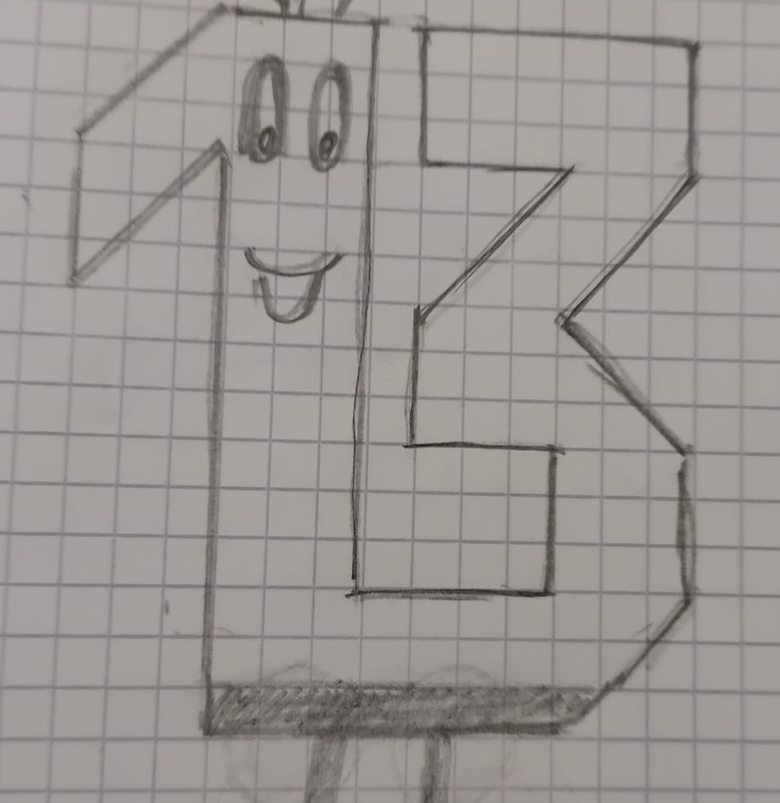
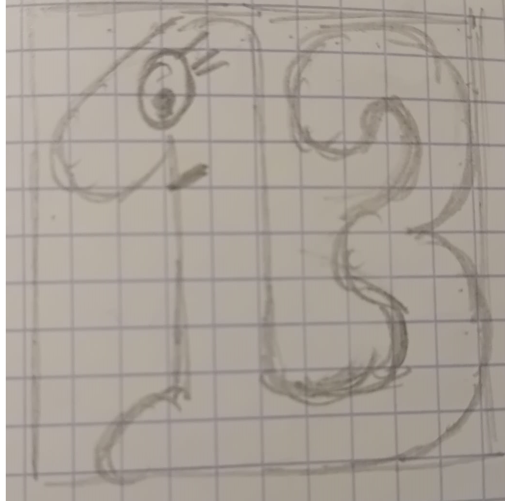

CONTEXT
"Unloved 13" is my second game and also my second submission to the JS13K Jam.
It’s built on a small JavaScript game engine I originally created in 2023, which includes basic features such as a game loop, canvas rendering, mouse and keyboard input, a synthesizer, and an audio sequencer. The whole thing weighs about 3.4 KB zipped, and it’s very simple and flexible to use.
In 2024, before the competition, I added a few “extensions” to the engine:
- Image extension: helps reduce the amount of code needed to render images on a 2D canvas.
- Animation extension: provides an easy way to create sprite animations.
- Song extension: allows composing songs with minimal code.
THEME
This year’s theme was Triskaidekaphobia, which means fear of the number 13 — definitely not an easy one.
At first, I wasn’t very inspired by the theme. After two days of brainstorming, I decided to make a small story where the player — representing number 13 — tries to befriend the other numbers, even though they’re all afraid of him because of their triskaidekaphobia.
At that point, it became obvious that a platformer would be the best way to tell this story — even though I had never made one before.
PLATFORMER BASICS
On August 15th, I started building the platformer engine with the following core elements:
- A player sprite, controlled by the keyboard and subject to simple 2D physics (acceleration, velocity, position, gravity).
- A platform sprite, handling collisions with the player (using four hitboxes: left, right, top, and bottom).
- A scrolling system.
- The ability to push platforms.
The collision handling was — of course — the trickiest part. Even though it works decently, I’m not happy at all with the code, especially for collision resolution. Instead of applying impulses to separate colliding objects, I simply move the player back to its previous position… which feels pretty ugly./p>
Anyway, by August 18th, the game was already starting to take shape:
NUMBER 13 GRAPHICS
Creating the look for “number 13” wasn’t as easy as I expected — it actually turned into a family project!
Here are a few of the different versions of the creature we came up with along the way:
 LEVEL MANAGEMENT
Once I had the prototype and main character graphics ready, I focused on level management.
I created a dedicated level object to describe all the level components:
- Backgrounds (with scroll ratios)
- Platforms (size, position, background, behavior, etc.)
- Player (initial position)
- Numbers (position and behavior)
- Victory condition (end of level)
- Camera (initial position and start point)
Here’s what Level 1 looks like:
{
_backgrounds:[{_id:'A',_width:6000,_height:7500,X:1000,Y:0,_scrollRatio:1,_fillStyle:game.patterns.violetBlockBright}],
_platforms:[{_id:'16',_width:210,_height:30,X:2000,Y:3000,_fillStyle:game.patterns.violetBlockCircle,_radiusStyle:10,_movesTo:{X:1750,Y:3000,_velocityX:-50,_velocityY:0}},
{_id:'1',_width:210,_height:30,X:2000,Y:3000,_fillStyle:'#582970',_radiusStyle:10},
{_id:'1bis',_width:210,_height:30,X:2000,Y:3000,_actionable:{_message:'TEXT_BOX:NUMBER 45 IS SCARED OF THE SPIDER. HELP HIM!:640:50'}},
{_id:'2',_width:400,_height:30,X:2300,Y:2900,_fillStyle:'#582970',_radiusStyle:10},
{_id:'3',_width:30,_height:930,X:2510,Y:2400,_fillStyle:'#582970',_radiusStyle:10},
{_id:'4',_width:530,_height:30,X:2300,Y:3100,_fillStyle:'#582970',_radiusStyle:10},
{_id:'5',_width:90,_height:180,X:2650,Y:2920,_image:game.images.spider},
{_id:'6',_width:210,_height:30,X:2000,Y:3200,_fillStyle:'#582970',_radiusStyle:10},
{_id:'7',_width:240,_height:30,X:2300,Y:3300,_fillStyle:'#582970',_radiusStyle:10},
{_id:'8',_width:500,_height:3300,X:2800,Y:540,_fillStyle:game.patterns.violetBlock},
{_id:'9',_width:1630,_height:300,X:1195,Y:3525,_fillStyle:game.patterns.violetBlock},
{_id:'10',_width:210,_height:30,X:2000,Y:3400,_fillStyle:'#582970',_radiusStyle:10},
{_id:'11',_width:210,_height:30,X:2000,Y:2800,_fillStyle:'#582970',_radiusStyle:10},
{_id:'12',_width:240,_height:30,X:2300,Y:2700,_fillStyle:'#582970',_radiusStyle:10},
{_id:'13',_width:240,_height:30,X:2300,Y:2500,_fillStyle:'#582970',_radiusStyle:10},
{_id:'14',_width:120,_height:10,X:2350,Y:2530,_fillStyle:'#d10c0c',_radiusStyle:[0,0,10,10],_actionable:{_message:'PLTF_MOVE:16'}},
{_id:'17',_width:210,_height:30,X:1500,Y:3000,_fillStyle:'#582970',_radiusStyle:10},
{_id:'18',_width:210,_height:30,X:1200,Y:2912,_fillStyle:'#582970',_radiusStyle:10},
{_id:'19',_width:210,_height:30,X:1500,Y:2800,_fillStyle:'#582970',_radiusStyle:10},
{_id:'20',_width:210,_height:30,X:1200,Y:2701,_fillStyle:'#582970',_radiusStyle:10},
{_id:'21',_width:640,_height:30,X:1500,Y:2600,_fillStyle:'#582970',_radiusStyle:10},
{_id:'23',_width:210,_height:30,X:1200,Y:2506,_fillStyle:'#582970',_radiusStyle:10},
{_id:'22',_width:480,_height:3500,X:730,Y:600,_fillStyle:game.patterns.violetBlock},
{_id:'24',_width:500,_height:30,X:1500,Y:2400,_fillStyle:'#582970',_radiusStyle:10},
{_id:'25',_width:30,_height:120,X:1970,Y:2280,_fillStyle:'#a26ac8',_strokeStyle:'#582970',_radiusStyle:5,_pushable:{_Xmin:2015,_Xmax:2125,_Xfall:2020,_Yfall:2540,_fallSide:'right'}}],
_player:{X:2100,Y:2930},
_numbers:[{_id:'45',X:2600,Y:3065,
_Xmin:2595,_Xmax:2605,_velocityX:60,
_bodyFill:'#582970'}],
_victory:{_plt:'5',_num:'Player'},
_camera:{X:2300,Y:3200}
}
Then I made an initLevel() function that takes this level object as a parameter and initializes everything accordingly.
FPS MANAGEMENT
For me, the most challenging part of this project was handling FPS independently of the hardware.
For example, on a 60Hz monitor, the browser runs at ~60 FPS, while on a 120Hz monitor, it runs at ~120 FPS.
FIRST ATTEMPT
My first (naive) approach was to calculate the deltaTime between two frames and apply physics like this:
- Xvelocity += Xacceleration * deltaTime
- X += Xvelocity * deltaTime
But… that doesn’t really work.
Example:
With a frame every 0.1s:
Time = 0s → Velocity = 0 → X = 0
Time = 0.1s → Velocity = 0.1 → X = 0.1
Time = 0.2s → Velocity = 0.2 → X = 0.3
Time = 0.3s → Velocity = 0.3 → X = 0.6
Time = 0.4s → Velocity = 0.4 → X = 1
Now with a frame every 0.2s:
Time = 0s → Velocity = 0 → X = 0
Time = 0.2s → Velocity = 0.2 → X = 0.2
Time = 0.4s → Velocity = 0.4 → X = 0.6
So at 0.4s, the object ends up at X = 1 or X = 0.6, depending on the FPS. Not great!
SECOND ATTEMPT
My second approach was to cap the FPS at 60, which I think makes sense logically.
However, some players mentioned in their reviews that the game doesn’t run properly on 120Hz monitors. Unfortunately, I only own a 60Hz monitor, so I couldn’t test it myself. 😅
I’ll definitely dive deeper into this topic next year to make it more robust.
CONCLUSION
I’m really happy I managed to release something this year — it was a lot of work!
Since this was my first attempt at creating a platformer, I learned a ton. I now have a clear idea of what to improve for next time — mainly collision resolution and FPS handling. I’ll spend some time exploring both topics before next year’s jam.
As always, the JS13K community was fantastic — super friendly, helpful, and generous with feedback. I also really liked the new backend this year, especially the ability to upload and test the game as a draft before submitting. Thanks, Alkor!
Finally, huge thanks to my family for their support, ideas, patience, and for playtesting the game so thoroughly. ❤️